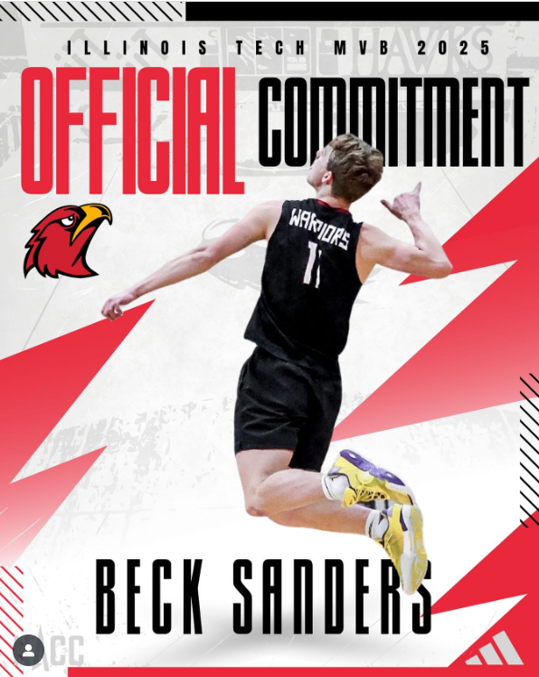
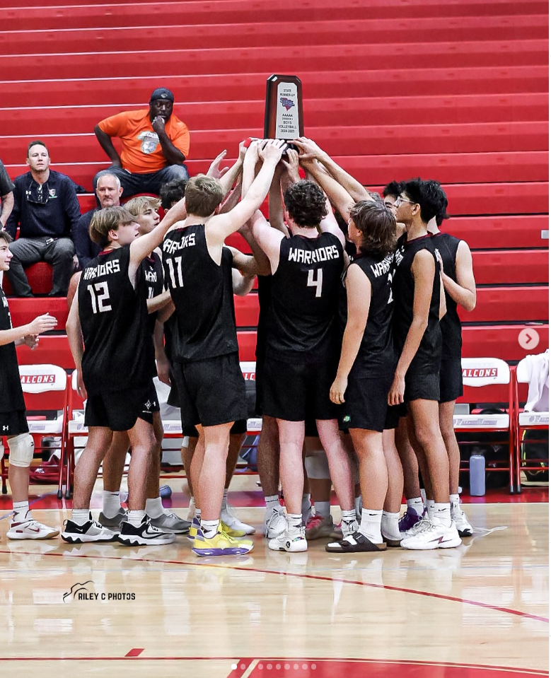
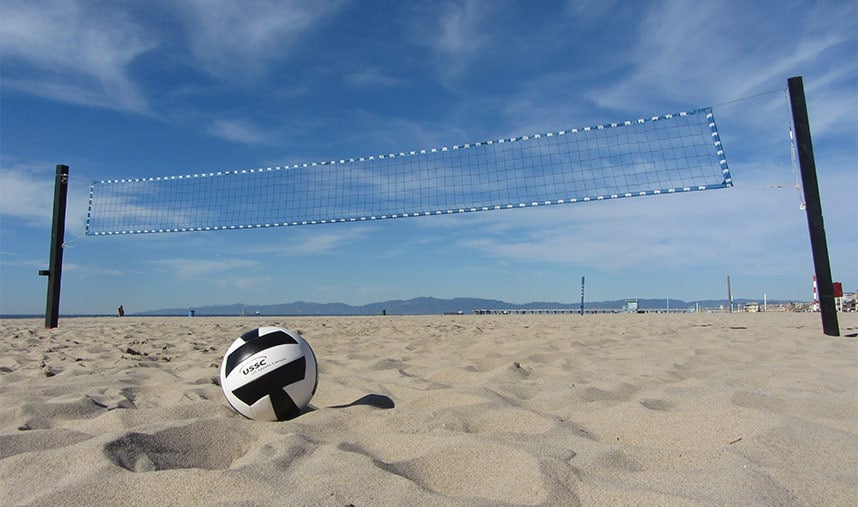
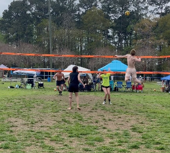
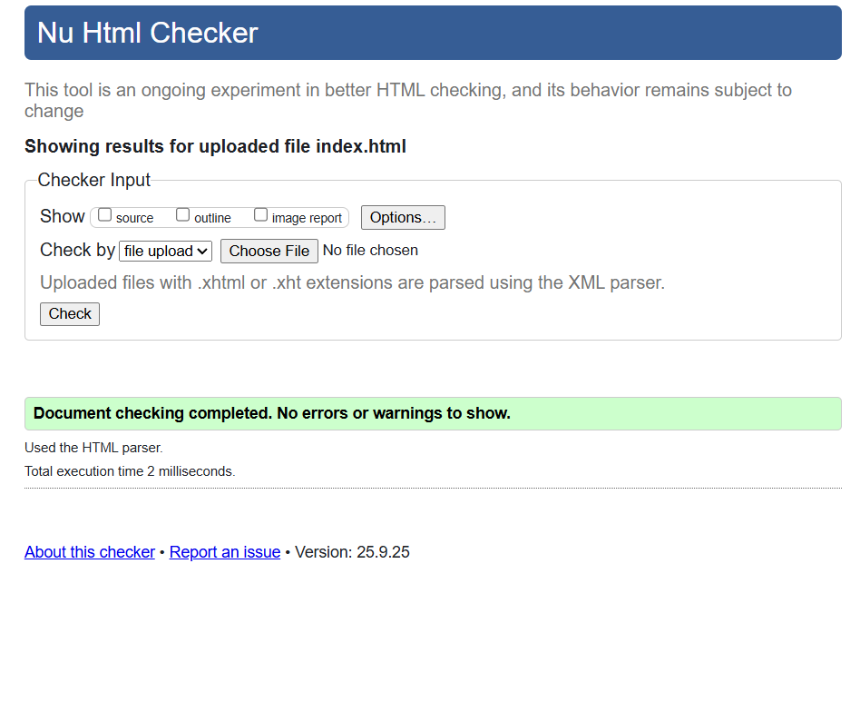

My Favorite Sport Volleyball!
I play for Illinois Institute of Technologys mens volleyball team! I've been playing volleyball
for 3 years and switched from Opposite hitter to Outside hitter while transitioning from highschool
to college. I love to play grass and beach volleyball and it is a huge part of my current life!

My favorite memories playing volleyball
- Winning lower state championship in highschool for the first time.
- Touching 11 feet for the first time in vertical testing.
- Competing in state championship game against the top team in my state, (despite losing).

What I want to do in the future with volleyball
I want to play beach volleyball after I graduate from college and try to dip into the pro scene especially because I am already great as grass (seen in the video at the bottom), alternatively
I might try to coach or become a coaching assistant on the side in the future.

Here’s a reel of me playing grass back in high school:

HTML Validation
